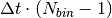

PoldiTruncateData dialog.
Table of Contents
| Name | Direction | Type | Default | Description |
|---|---|---|---|---|
| InputWorkspace | Input | MatrixWorkspace | Mandatory | Input workspace containing raw POLDI data. |
| ExtraCountsWorkspaceName | Input | string | Workspace name for extra counts. Leave empty if not required. | |
| OutputWorkspace | Output | MatrixWorkspace | Mandatory | Output workspace with truncated POLDI data. |
POLDI data consists of one spectrum for each detector wire, where one spectrum contains a certain number of time bins. This number is directly related to the chopper speed, here represented by  which is the duration of one chopper period and the amount of time one bin spans:
which is the duration of one chopper period and the amount of time one bin spans:
Since the first bin starts at 0, the last bin starts at , so the workspace has to be cropped to the proper bin count in each spectrum, which is usually 500.
As a check for the experimental setup, some more time bins are recorded (usually 10). If they are empty or contain only a very small number of counts, the assignment of neutron arrival times in the detector can be assumed to be correct.
Since further data analysis steps rely on the correct number of bins being present, this algorithm crops the supplied workspace to the correct size. If desired, the algorithm can also create a workspace where the counts of the extra bins are summed into one spectrum.
Note
To run these usage examples please first download the usage data, and add these to your path. In MantidPlot this is done using Manage User Directories.
In the first example, POLDI data is cropped to the correct workspace size:
# Load data and instrument - this is important, as the chopper configuration must be known.
raw_6903 = LoadSINQFile(Filename = "poldi2013n006903.hdf", Instrument = "POLDI")
LoadInstrument(raw_6903, InstrumentName = "POLDI", RewriteSpectraMap=True)
print "The raw data workspace contains", len(raw_6903.readX(0)), "time bins."
# Truncate the data
truncated_6903 = PoldiTruncateData(raw_6903)
print "The truncated data workspace contains", len(truncated_6903.readX(0)), "time bins."
Output:
The raw data workspace contains 510 time bins.
The truncated data workspace contains 500 time bins.
The second example also examines the extra time bins:
# Load data and instrument again.
raw_6903 = LoadSINQFile(Filename = "poldi2013n006903.hdf", Instrument = "POLDI")
LoadInstrument(raw_6903, InstrumentName = "POLDI", RewriteSpectraMap=True)
# Truncate and store the extra bins in a workspace called "extra_6903"
truncated_6903 = PoldiTruncateData(raw_6903, ExtraCountsWorkspaceName = "extra_6903")
# Get the workspace from central workspace manager
extra_6903 = mtd['extra_6903']
# Examine the workspace a bit
print "The extra data workspace contains", extra_6903.getNumberHistograms(), "spectrum."
print "The bins contain the following data:", [int(x) for x in extra_6903.readY(0)]
Output:
The extra data workspace contains 1 spectrum.
The bins contain the following data: [13, 0, 0, 0, 0, 0, 0, 0, 0, 0]
Categories: Algorithms | SINQ\Poldi